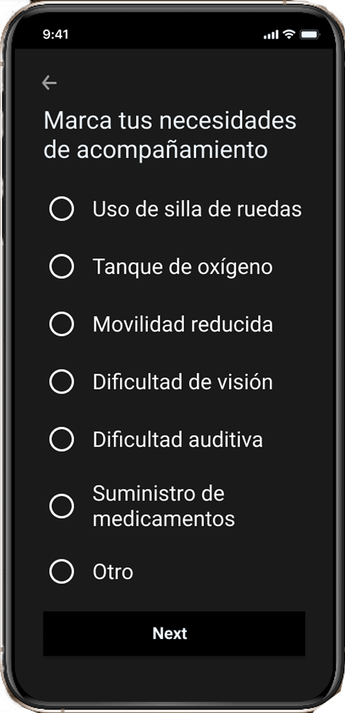

Observar
Investigamos a personas mayores para comprender sus necesidades, miedos y experiencias con apps de transporte.
BASTIÁN ARAVENA
ORTIZ
Plataforma que conecta a personas mayores con conductores verificados, priorizando la seguridad, la confianza y la facilidad de uso en cada etapa del viaje.

Personas mayores tienen dificultades para usar apps de transporte por su complejidad y falta de confianza.
Investigación UX, Arquitectura de información, UX/UI Design, Prototipado y usabilidad.
2 meses
(Marzo - Abril 2023)
Figma, Figjam, Miro, Notion, Google Forms.
Muchas personas mayores evitan usar apps de transporte porque las interfaces son complejas, los pasos son confusos y no se sienten seguras al compartir su ubicación o datos personales.
Esto limita su autonomía y acceso a servicios esenciales como consultas médicas, trámites o actividades diarias.
¿Cómo podríamos diseñar una app de transporte que sea fácil de usar, genere confianza y entregue acompañamiento durante todo el viaje para personas mayores?
Investigamos a personas mayores para comprender sus necesidades, miedos y experiencias con apps de transporte.

Sintetizamos hallazgos y definimos prioridades para estructurar la experiencia de forma simple y clara.

Ideamos, prototipamos y validamos soluciones centradas en la confianza y la facilidad de uso.
Tipografía grande, lenguaje simple y una navegación guiada para reducir la carga cognitiva.
Mensajes de guía, confirmaciones visuales y soporte humano disponible en todo momento.
Perfiles verificados, compartir viaje y seguimiento en tiempo real para mayor tranquilidad.

